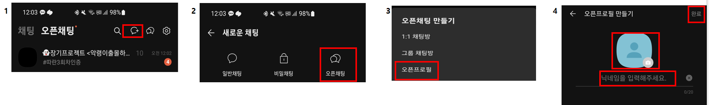

01
페널티 안내
매월 2일에 공지를 지키지 못한 회원은 1주 동안 본방 내보내기 페널티가 적용됩니다.
- 페널티를 자주 받으면 모임과 함께 할 수 없는 점 기억해 주세요
- 페널티 받는 기간에 지기활동이 겹칠 경우 지기활동을 기간 동안 다 끝마친 후에 페널티를 받으러 나갑니다
- 7월은 와글휴가의 달로 지정합니다. 같이 휴가 가면 잼겟따. 7~8월 오프라인 출첵을 면제해줍니다
페널티의 기준이 궁금해용!
- 프로그램 예약입금 + 캘린더 등록 이후부터 나가면 페널티 O
예외는 갑자기 잡힌 근무출근만 페널티 면제 융통성으로 조사에도 페널티 면제됩니다 · 경사는 기쁘게 즐기며 페널티 받습니다 - 프로그램 예약 전 + 캘린더 등록 전에는 나가도 페널티X 근데 자주 나간다? 그러면 정수기 앞에서 기강 잡힘
- 입금 후에 나가게 될 경우 환불 X, 대신 그 자리에 추가 인원으로 채웠을 경우에만 환불 O
- 그냥 최대한 스케줄에 맞추고 빠지지 말자. 총대 귀찮으니까
현생이 바빠 힘이 들 땐 제발 휴식기를 쓰세요!!
휴식기 안 쓰고 활동 저조해서 의심받으면 님만 손해 바쁘냐고 물어보기 전에 휴식기를 사용하십시오.
휴식기란?
한 달 동안 사용 가능하며 현생이 힘들거나 바쁠 때, 마음이 힘들 때, 집안에 일이 생겼을 때 등 사용 가능합니다.
사용 시
- 본방 단톡방 나가기 (공지방은 나가면 안됨!)
- 이미 들어가 있는 오프라인 모임은 계속 진행하기
- 온라인 프로그램은 개인면제권 사용 → 휴식기 면제권 1개 제공
- 한 달 이상의 휴식기일 경우에는 들어가 있는 온라인 프로그램방을 다 나가기. 그 후 일회성 참여로 전환됩니다 (휴식기 면제권 지급x)
- 휴식기가 끝나면 날짜에 맞춰 본방에 들어오기
- 장기 휴식기는 최미노 문의 (연차가 쌓일수록 오래 쓸 수 있음)
🌺 경조사, 이사로 인한 휴식기는 짧게 3일, 1주일 정도로 가능
휴식기를 쓰고 싶을 땐 최미노에게 개인톡
02
기본 공지
- 매월 1일에 양식에 맞춰 지난 달의 읽은 책 목록 올리기
양식#10월미노목록 : 총0권.책후기0개 1.책제목 2.책제목
- 월 2개 이상의 책후기 올리기
양식#책후기 #책제목 #닉네임다른 태그 하지 마세요 지기들 혼란옴. 후기에는 답장 기능도 쓰지 마세요! 지기들 힘들어여
- 오프라인+온라인 모임 2개월에 최소 1회씩 참여하기 참여 후 꼭 출첵 기록하기
- 닉넴 옆 책 제목은 알아볼 수 있게 적어주세요
03
모임 규칙
💡 온라인 프로그램 주의사항
- 프로 1시간 전까지 책후기와 책표지 사진을 올립니다. 그 이후 올릴 경우 마이너스포인트 적립
- 프로 1시간 전까지 총대에게 개인톡으로 미완독, 불참 여부를 말합니다. 그 이후 연락할 경우 페널티 2배
- 연락 없이 불참할 경우도 페널티 2배
- 투표, 설문조사 등 참여해야 하는 것 불참할 경우 페널티 2배입니다. 이제 한 명 한 명 부르지 않습니다
프로그램 참여자가 많을수록 총대가 챙겨야 하는 게 많습니다. 본인은 본인 한 사람이지만 총대는 열몇 명을 챙깁니다. 늘 총대에게 감사한 마음을 가져주십시오
💡 오프라인 기본 룰
- 최소 인원 4명이 모여야 모임 개최 가능
- 정규 오프라인 모임 외의 기타모임 개설은 자유로우나 출첵 카운팅 ❌️ ex. 비정규책밥, 퇴근책밥, 평일책밥, 문화생활, 각종 번개모임 etc. * 정규 오프라인 모임(출첵카운팅O)은 오로지 토요일만 됩니다
- 오프라인 모임은 하루에 1개만 개설 가능 (원데이 원모임! 같은 장소 껌딱지모임은 가능) 껌딱지모임: 같은 장소 같은 시간 최소 인원 4명 채우시면 가능함 ❌️ 경기도 퇴근책밥 12/31에 여는데, 서울퇴근책밥 12/31에 여는 거 불가능
- 모임 채팅에선 방의 목적과 관련된 채팅만 하기. 다른 얘기는 본방에서!
- 참여자들은 채팅방에 입장 시 꼭 본인 닉네임으로만 (카카오 프렌즈 프로필로만, 개인 1:1프로필 X) 들어가야 합니다.
- 개인 사정으로 오프라인 참석 늦거나 불참 시, ‼️미리 총대에게 갠톡하기‼️ (단톡방 또는 본방에 말하기 금지) → 모임 시작 전 분위기 쳐짐, 맥빠짐, 물타기 등을 방지하기 위해 만든 룰이니 꼭 지키기.
- 정규책밥은 최소 시간 4시간 진행
퇴근책밥(정규x)은 최소 시간 2시간 진행
퇴근책밥이란? = 우리의 퇴책
- 아무때나, 누구나 열기 가능!
- 필수조건 : 최소 인원 4명, 최소 2시간 채우기
- 장소는 카페, 공원, 스터디룸, 와인책바 등 너무 시끄럽지 않고 책을 읽고 얘기를 나누는데 큰 어려움이 없는 곳이면 언제든 가능
- 번개성이기 때문에 과감하게 방을 파서 공지방에 냅다 올려야 합니다. 인원이 못 채워진다고 해서 슬퍼하지 말고 다음 퇴근을 쿨하게 노릴 것
- 퇴책은 인원이 많으면 찢어져 앉아서 진행하면 됨 no
- 퇴책에 자주 늦으면 정수기 앞에서 면담합니다 조심!
💡 프리덤 투표 룰
프리덤 투표 만들 때 주의사항
- 투표 올린 다음 시간부터 24시까지 옵션 만들기 예시) 투표 올린 시간 오후 6시 20분이면 오후 7시부터 12시까지 생성
- 복수투표 가능
- 투표 종료시간 체크 해제
04
총대 가이드
모든 오프라인 모임 총대는 ①을, 정규책밥 총대라면 ②까지 꼭 읽어주세요. 총대 필독
💡 ① 오프라인 모임 열고 마무리하는 법
STEP 1모임 열기 전
- 만들고 싶은 오프라인 모임 본방에서 떠보기 금지 ex) “이거 하고 싶은데 수요 있으면 열게요,,,” 안됨 모임 조건(최소 인원·시간·장소)은 ‘오프라인 기본 룰’ 참고
- 총대하기 전에 공지방에 올라오는 글들을 유심히 보고 참고해주세용
STEP 2방 만들고 승인받기
- 총대 본인이 카톡 1:1프로필인지 확인 후 오픈채팅방 개설

1:1 오픈프로필 만드는 법 (갤럭시ver. 바보폰은 알아서 하기)· 옆으로 밀어서 보기 → - 오픈채팅방 이름 = 진행하는 모임명 ex. 0월 00일 건대책밥
- 날짜 & 시간 & 장소 & 모임의 간략설명 & 방링크를 하나의 채팅으로 방장(최미노) 공지방 개인톡으로 보내기
예시🍀11/31 건대책밥 장소: 건대역 근처 스터디카페 날짜: 11/31 시간: 10시~16시 총대: 미노 링크: ___________________- 구체적인게 고민된다면 이렇게 공지해도 돼요
예시🍄퇴근책밥해요 장소: 같이 정해요 날짜: 같이 정해요 시간: 같이 정해요. 퇴근하고 19시겠죠? 총대: 미노 링크: ___________________* 설명이랑 같이 안 보내고 ‘카카오톡 오픈채팅을~’로 링크 보내면 최미노에게 척.살 🔪 - 승인되면 방장(최미노)가 공지방에 올림
STEP 3인원이 모이면
- 최소 인원 4명이 모여서 편성이 될 경우, 총대가 타임트리에 등록 후 본방 상단공지용 적어서 본방 최미노 태그 후 보내기
- 다른 상단공지들과 똑같이 적어야 됨
- 복붙하기 쉽게 본방에 공유해주세요
- 정규프로그램이 아닌 모임은 타임트리 태그 기타로 설정하기
상단공지 양식🍄11월 20일 토요일 건대책밥 10시~14시 (모집중) 총대: 미노 장소: 건대역 00스터디카페 링크: ___________________ - 모집완료가 되면 본방에 미노 태그해서 "모집완료"됐다고 공유하기
STEP 4모임 당일
- 책밥에 뉴비가 있거나 처음 보는 사람이 있을 경우 참여 인원들 닉네임을 적은 이름표 챙기기
- 스터디룸 끝나고 총대는 현금영수증 챙기기 (총대특권)
STEP 5모임 끝난 후
- 해당 모임 오픈채팅방에 후기 이어적고 출첵하라고 공지
- 정산할게 있다면 돈보내기 전까지 모두 나가기 금지
- 방장(최미노)에게 개인톡으로 그날 모임 요약 아래 양식에 맞춰 보내기
양식- 늦은사람 : - 빠진사람 : - 말 적었던사람 : - 집중 못한 사람 : - 특이사항 또는 전달사항 : - 홈페이지 인스타, 노션 장소정보 업로드 올리셨습니까?
- 모임후기 모두 적은 거 확인하고 본방에 올리기
- 인스타에 올릴 모임사진과 설명을 본방에 올려서 인스타 지기에게 업로드 요청하기
- 설명은 자세하게 적기
- 새로운 장소, 뒤풀이 장소 노션 > 장소정보에 기입
- 모임 시 찍은 사진과 글을 네이버 카페 <야외모임갤러리>에 작성
- 만나서책읽기(책밥)와 퇴근후책읽기(퇴근책밥)만 작성하는데, 작성 시 회차 틀리지 않게 꼭 마지막 회차 찾아본 후에 작성하기
- 제목은 0000.00.00 칼퇴 후 책읽기 N회차
- 내용은 양식에 맞춰 적으면 됨
- 사진 최대 5장 첨부
🌺 총대는 날카로운 눈으로 공지를 준수할 수 있도록 방과 참여자들을 잘 관리해주세요.
💡 ② 정규책밥 총대 추가 지침
STEP 1D-14까지
- 책밥을 열 때 총대는 인원수를 정하지 않고 D-14 (2주 전)까지 열어두기. ex. 1/28 책밥의 경우 1/14일까지 마감 X
- 책밥 날짜 D-14에 방 예약하기
- 만일 2개 이상의 방을 예약해야 하는데 방이 모자랄 시, 근처에 있는 같은 역 다른 스터디룸 예약 ex. 사당 스터디룸위드에 1개 방/ 사당 하이스터디룸 1개 방 예약
STEP 28명이 넘으면 방 나누기
- 만일 참석 인원이 8인이 넘을 경우(8인까지 한 방 씀), 방을 쪼개서 같은 날&시간&장소에서 열기.
방이 2개 이상일 경우에도 총대는 1명임. But 원활한 관리를 위하여 쪼개진 방에 부총대 1명을 두기로 함.
- 부총대는 총대가 선정 (총대를 안 해본, 적게 해본 사람 위주로 정해주기)
- 부총대는 닉 옆에 부총대라고 적고 일대일 프로필로 바꾸기 ex) 닉네임(부총대)
- 부총대는 총대를 도와 쪼개진 방을 날카로운 눈으로 관리하고 총대에게 알려주기. 늦는 자, 빠지는 자, 집중 못 하는 자 등,,
방 쪼개기 예시책밥 인원 각 방 인원 방 수 10명 5명 / 5명 2개 11명 5명 / 6명 2개 12명 6명 / 6명 2개 13명 6명 / 7명 2개 14명 7명 / 7명 2개 15명 5명 / 5명 / 5명 3개 16명 5명 / 5명 / 6명 3개 - 방 나누기는 카카오톡 사다리타기로 정하기. (단, 뉴비는 각 방에 한 명씩 넣기)
사다리타기 하는 방법
- 채팅 치는 곳 오른쪽에 #을 누른 후 사다리타기 기입 후 돋보기 클릭
- 내기 인원과 참여 인원 조정 후 공유하기
STEP 3모임 당일
- 모든 방의 스케줄은 무.조.건. 동일하게 하기.
인사 – (책읽기 – 얘기하기 – 쉬는시간) x4 – 마무리* 특히 시작하는 시간과 쉬는 시간을 동일하게 세팅해주세요. 그러니 늦지마세요.
- 같은 스터디룸에서 여러 개의 방으로 운영할 경우 2타임하고 인원 스위치 가능 만일 인원 스위치를 하고 싶은 경우, 사다리타기 할 때 이동 인원들 정하는 것까지 사다리타기 * 이동인원은 본인 닉네임 옆에 방 번호와 이동까지 적기 — ex) 닉네임 - 방#1(이동)
05
함께 지켜요
- 개인연락, 개인친목 금지. 수작금지.
- 와글와글 모임은 가벼운 모임이 아닙니다. 채팅방에서의 부방장은 채팅 가리기 용도 + 강퇴지기의 내보내기 용도이며, 방 운영은 방장이 합니다 (1인 운영임 : 최미노)
- 책후기에 반응 0순위로 해주기. 대화 끊겨도 됨. 서로 눈치 보지 말고 책 얘기를 0순위로 서로 장려하기
- 책후기 올린 후 최소 5분 동안 대기하며 대화하기, 쓰고 바로 떠나는 일방적 소통 금지
- 기타 야외모임은 언제든지, 누구나 개최할 수 있습니다. 방법은 총대 가이드를 참고하셔서 양식에 맞게 작성 후 방장(최미노)에게 개인톡으로 승인받습니다.
- 그 후 방장(최미노)이 공지방에 올리면 모임을 진행합니다.
- 온라인 모임 오픈채팅방일 때 : 친목주의 사담주의
- 와글 참여 3달 이후엔 지기제도에 투입됩니다
- 야외모임 채팅방에 입장 시 꼭 본인 닉네임으로만 (카카오프렌즈프로필로만 들어가야합니다. 개인 1:1프로필X) 들어가고 관음금지 (들어왔다 바로 나가기)
06
와글팁
스포의 기준이 궁금하세요?
스포는 ‘ㅅㅍ’ 기입 후 카카오톡 스포 방지 기능 사용하여 대화를 나누시고 책후기엔 스포주의라고 꼭 적으십시오
서점사 책검색 책 줄거리 설명에 들어갔을 때 나오는 건 스포아님.
그 외는 스포
예시 1
책설명에 “주인공은 거식증으로 정신질환도 가지고 있는데 길가다 게이를 만나게 된다,,.” 이랬을 경우
게이공개스포아님
쥔공 거식증스포아님
예시 2
책설명에 “주인공은 거식증으로 정신질환도 가지고 있는데 길가다 한 남자를 만나게 된다,,.” 이랬을 경우
그 남자가 게이다 게이공개스포맞음
쥔공 거식증스포아님
스포에 주의하셔서 서로 재미를 잃지 않고 독서를 즐기도록 합시다~~~!!